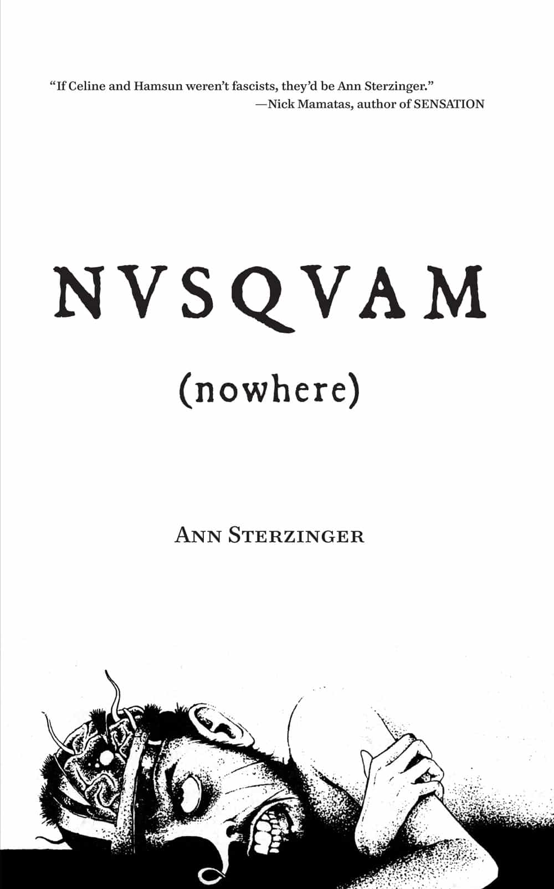

< < < Back
Masculinity, Misanthropy And Mirth: Inside The World Of Ann Sterzinger – Return Of Kings
NOTE: Ann Sterzinger is a personal friend of mine, and this article represents my personal opinions on the merit of her work.
Self-publishing has been one of the greatest innovations of the last decade and one of its greatest curses. Sure, the freedom to release your life’s work without having to grovel to some executive with his head shoved up his rectum is great. So is the ability to actually keep the majority of your book’s earnings (most mainstream authors earn at most ten percent royalties, which they usually have to split with their agent).
Unfortunately, self-publishing also means self-promotion: without the resources of a major publishing house behind you, you’re left to hock your own wares. This advantages self-help writers—most of whom already have marketing techniques down pat—at the expense of everyone else. The reading public also gravitates towards self-help books, with fiction and memoirs being a far harder sell. The end result is that while today’s novelists may have the freedom to publish whatever they want, the hurdle of self-promotion means that most of them will languish in obscurity.
Take my friend and Taki’s Magazine colleague Ann Sterzinger. When I asked her how many books she and her confederate Andy Nowicki were selling via her Hopeless Books label, she chuckled and said, “Um… I think I owe Andy enough to buy a hamburger?”
It’s a shame, seeing as Sterzinger and Nowicki are by far the best young fiction writers out there today (yes, being middle-aged counts as “young” in the world of literature). Some may say that using my ROK bully pulpit to promote a personal friend is borderline unethical, but had I never bought and reviewed Sterzinger’s novel NVSQVAM (Nowhere), we’d have never become friends to begin with. I also know I’m going to catch flak from the permavirgin crowd for praising a woman writer, but I doubt they read books anyway.
Indeed, if you scrubbed her name off NVSQVAM and The Talkative Corpse (we’ll ignore her freshman novel, the entertaining misfire Girl Detectives), you’d have a hard time even telling Sterzinger is a woman. Not only is her prose crisp and funny, her subject material is a complete 180 from the whiny navel-gazing that most female writers puke out.
Sterzinger’s oeuvre sits at the crossroads of generational angst and male alienation, tales of losers struggling against a world that holds them in contempt. She arguably captures the experience of being a man better than many male writers do. With her recent hiring as Takimag’s editor, replacing the departing Jim Goad, hopefully Sterzinger will start getting some of the attention she deserves.

A Brief History Of Beautiful Losers
Ann Sterzinger and Andy Nowicki’s brand of “loser-lit” has a pedigree going back nearly a hundred years. All roads converge with Louis-Ferdinand Céline, the original self-made pariah of Western fiction. His 1931 novel Journey to the End of the Night (Voyage au bout de la nuit in the original French) introduced the world to Ferdinand Bardamu, Céline’s misfit alter ego, bringing with it a new prose style that mimicked the nature of human memory itself.
Journey and its successor novels succeeded because they blended misanthropy, humor, and above all, self-awareness. Any teenage emo idiot can talk about how everyone else is a piece of shit: it takes courage to mock yourself. Céline’s sophomore effort Mort à crédit (translated as Death on the Installment Plan) was a glorious monument to self-abasement, in which he depicts his literary surrogate as a fap-addicted oddball with an aversion to wiping his ass.
Despite attempts by politically correct leftists to erase Céline from history (he was a fascist who authored anti-Semitic pamphlets and supported the Vichy regime during World War II), he’s remained one of the most influential writers of the 20th century. Virtually every great writer who came after Céline, from mid-century novelists like Charles Bukowski and William Burroughs to modern ones like Michel Houellebecq and John Dolan, owes him a considerable debt. A few hacks have also ripped Céline off: for example, Joseph Heller’s Catch-22 is an artless imitation of Journey to the End of the Night, lacking that novel’s rhythm or frankness.
Sterzinger also lays claim to the legacy of another group of 20th century literary misfits: the Angry Young Men. Rising to prominence in the 1950’s, the Angry Young Men were a reaction to the suffocating Beigeism of post-war Britain, a society that praised mediocrity and elevated fools like James Joyce to prominence in the arts. Writers such as Kingsley Amis and John Osbourne lambasted the British establishment with novels such as Lucky Jim that defied the literary conventions of the era. Sterzinger has named Amis as one of her influences, even telling me in an interview that NVSQVAM (Nowhere)’s protagonist Lester Reichartsen is partially based on him.

The Marginal Men
Both NVSQVAM (Nowhere) and The Talkative Corpse feature male marginalization as their subject matter, notable not just because it’s an underserved market in modern literature, but because of who wrote them. Sterzinger deliberately bucks the trend of novelists who can only write about their own milquetoast lives; she told me in the aforementioned interview that autobiographical fiction “bores the shit” out of her. She also bucks the trend of onanistic writers who can’t imagine what life is like outside their Manhattan cocoons, as her male protagonists are just as believably loserish as anything Amis or Céline put out.
In particular, NVSQVAM probes both modern male alienation and the existential nausea of Generation X. The novel’s protagonist Lester is a punk rock washout brought low by bad luck and his own foolishness. Relegated to grad school after an accidental pregnancy and shotgun marriage, Lester spends the bulk of the novel at the whim of everyone around him, from his ball-busting wife, his bratty Oskar Schell-esque son Martin (whose name is an allusion to Kingsley Amis’ own no-talent progeny), to a brainless co-ed who seduces him:
He looked up at Jenneth, who was waiting like a puppy for him to say something devastatingly witty yet easy to understand about the Incas. She wants her drink to shoot out her nose. Not much else to strive for, has she? Noblesse oblige was dead, and self-fulfillment was middle-class. The only decent things to want were good drugs and long mornings and weird Incan professors staring into your cleavage while you wandered around in your underwear in December in Minnesota during an oil shortage which would never affect you. To expect anyone to use leisure productively, in short, was pathetic. “You and your German work ethic, old boob,” he muttered.
Lester’s life and ambitions are crushed not only between the twin poles of family life and post-sixties hedonism, but between the machinations of the generations that surround him. Generation X exists between two groups of malignant narcissists: the Baby Boomers, with their vanity and willful destruction of societal norms, and the Millennials, who pursue mechanistic self-gratification to compensate for their inability to form normal relationships. Raised during the dismantling of the old America, GenX was never able to adapt to the world around them, an alienation that can be found in every bit of art they created, from Less Than Zero to In Utero.
The Talkative Corpse probes the same themes with an extra dash of ebullient rage. The book is presented as the diary of John Jaggo, a marginally employed 40-year-old dweeb, as interpreted eons in the future (the novel is set in early 2010’s Chicago). Aside from an amusing commentary on how society bases its impressions of long-extinct civilizations on the few texts that survive the centuries, The Talkative Corpse is a bleak portrait of life at the bottom of American society:
Her name was Kat. I want to stomp on little Kat’s hauntingly beautiful face. I want to smash her fucking skull in to end all the dismissive thoughts she now has about me that make a mockery of the spontaneous poetry that used to come out of her mouth. I won’t tell you what she said, because I was a shameful fool for believing such rot. Such lying scum rot. I want to shove her pretty nose back into her brain and crush her arm bones slowly and tie her to the railroad tracks, to throw her in the river and heave her in a quarry and strap her to a bomb and fill her drink with cyanide and giggle as the maggots crawl from the exploded dead bags of what once were her creamy perfect breasts.
Tying together the dejected men of NVSQVAM and Corpse is the mirthful misanthropy at the heart of Sterzinger’s work. She formally subscribes to the philosophy of antinatalism, the idea that human beings should blot themselves out of existence as a moral imperative, but she doesn’t hammer you over the head with it like most modern writers. Instead, she paints the world as it is for the average man: loveless and emasculated, discarded by a broken economy, life is nothing but a train of comic miseries.
The operative word in that last sentence is “comic.” Sterzinger leavens her characters’ pratfalls with a healthy dose of empathy, the secret ingredient in the Célinean stew. Whining about how man is a piece of work is fine when you’re sixteen, but even the most serious goth eventually dumps the Black No. 1 and grows up. Even in the darkest corners of NVSQVAM (Nowhere) and The Talkative Corpse, there remains a lone ray of hope that hey, we can still make this thing work. As John Jaggo puts it:
Love may be bullshit. But without love, it’s all bullshit.
It’s ultimately this blend of empathy, comedy and honesty that makes for great writing. The world may suck, humans may be glorified shaved apes, and there’s probably no point to existence, but you persevere anyway because you have to. Because you can’t simply lay down and die. Because you’d rather struggle to make something of yourself—no matter how futile that struggle—then give up. Or as George Grant said: “When a man truly despairs, he does not write; he commits suicide.”
Indeed, the mostly-hopeless questing ethos of Ann Sterzinger’s characters mirrors her own struggle—as well as that of other modern writers—to get noticed. With the collapse of traditional publishing and the ongoing revolt against social justice warrior inanity, here’s hoping she, Nowicki, and their contemporaries get the recognition they’ve earned.
Read More: Inside The Mind Of The Social Justice Wanker